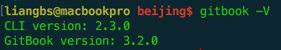
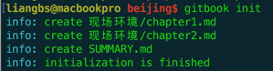
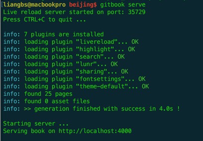
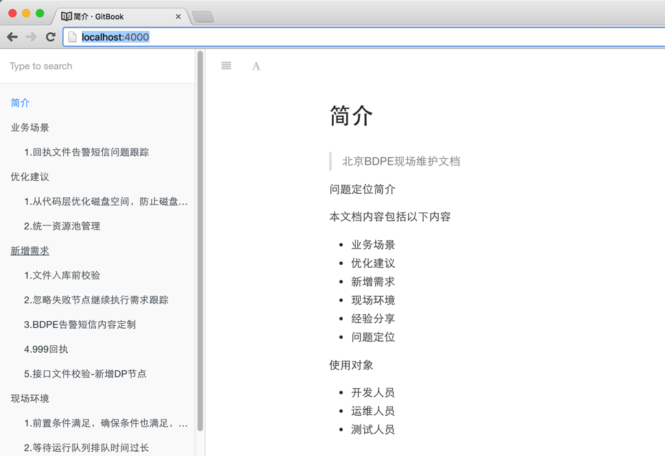
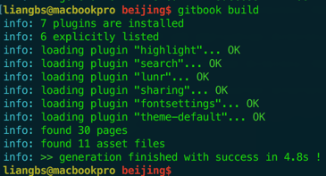

Gitbook使用手册
采用Gitbook的原因，有以下几点：
- 1.开源，有很多第三方的插件来推动这个产品发展；
- 2.用Markdown格式撰写文档；
- 3.使用git来进行版本管理和控制；
- 4.目录结构清晰，我们可以把所有的Markdown文档按照不同的主题归集到不同的目录层次下；
- 5.生成的网页纯静态，Gitbook是可以把所有的Markdown文档生成静态的HTML页面；
- 6.在服务器上安装Gitbook后，定制一个git hook脚本，就可以在每次文档更新提交后自动生成网站。
1.gitbook安装：
$ npm install -g gitbook-cli查看是否安装成功：

2.构建目录结构：
新建文件夹：
$ mkdir beijing
进入beijing文件夹下新建文件：
$ touch README.md －－－这个文件相当于一本书的简介，使用Markdown语法。
$ touch SUMMARY.md －－－这个文件相当于一本书的目录结构，使用Markdown语法。 输入以下内容到SUMMARY.md：
* [简介](README.md)
* [第一章](chapter1/README.md)
- [第一节](chapter1/section1.md)
- [第二节](chapter1/section2.md)
* [第二章](chapter2/README.md)
- [第一节](chapter2/section1.md)
- [第二节](chapter2/section2.md)
* [结束](end/README.md)3.进入beijing文件夹下执行下列命令，初始化图书结构：
$ gitbook init
4.启动本地服务（用于编辑时测试）：
$ gitbook serve（也可以指定端口$ gitbook serve -p 8080，默认4000）
5.访问本地服务：
http://localhost:4000/
6.发布静态HTML到tomcat容器：
执行命令：
$ gitbook build
把_book文件夹修改名称后放到tomcat的webapp文件夹下，
启动tomcat，
访问http://localhost:80807.安装gitbook editor（可选，一般用eclipse）：
https://www.gitbook.com/editor/8.Gitbook的插件支持：
Gitbook可以生成HTML，因此它支持一些外部的JavaScript文件嵌入到HTML中，例如Google统计、Disqus评论系统等。以下以页面中嵌入Disqus评论为例。
a.首先是安装Gitbook的Disqus插件。
$ npm install gitbook-plugin-disqusb.然后建立一个book.json文件，其格式如下：
{
"plugins": ["disqus"],
"pluginsConfig": {
"disqus": {
"shortName": "NAME-FROM-DISQUS"
}
}
}把上面的NAME-FROM-DISQUS修改为你在Disqus上的项目名即可。 再次运行命令：
$ gitbook serve并刷新浏览器，即可看到附加了Disqus评论的页面。